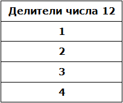

В данном уроке мы рассмотрим такие понятия как делители и кратные.
Что такое делитель?
Мы знаем, что делитель это число, показывающее на сколько частей нужно разделить делимое. Например, в выражении 8 : 2 = 4, делителем является число 2. Это число показывает на сколько частей нужно разделить число 8. После разделения получается ответ 4. Как видно из примера, число 8 делится на число 2 без остатка. Говорят, что число 2 является делителем числа 8.
Пример 1. Число 2 является делителем числа 8, поскольку 8 делится на 2 без остатка:
8 : 2 = 4
Пример 2. Число 3 является делителем числа 9, поскольку 9 делится на 3 без остатка:
9 : 3 = 3
Пример 3. Число 4 не является делителем числа 10 поскольку 10 не делится на 4 без остатка:
10 : 4 = 2 (2 в остатке)
Определение. Делителем числа а называется число, на которое число а делится без остатка.
Данное определение содержит переменную a. Подставим вместо этой переменной любое число, например число 12 и прочитаем определение:
Делителем числа 12 называется число, на которое 12 делится без остатка.
Попробуем перечислить эти числа:
1, 2, 3, 4, 6, 12
Все эти числа являются делителями числа 12, поскольку число 12 делится на них без остатка. Покажем это:
12 : 1 = 12
12 : 2 = 6
12 : 3 = 4
12 : 4 = 3
12 : 6 = 2
12 : 12 = 1
Кратные числа
Если какое-нибудь число без остатка разделилось на другое, то его называют кратным этого числа. Например, 6 без остатка делится на 3. Поэтому 6 является кратным числа 3
6 : 3 = 2
Определение. Кратным числа а называется число, которое делится без остатка на а.
Данное определение содержит переменную a. Подставим вместо этой переменной любое число, например число 5 и прочитаем определение:
Кратным числа 5 называется число, которое делится без остатка на 5.
У любого числа бесконечно много кратных. Например, первыми кратными числа 5, являются числа 5, 10, 15, 20, 25. Все они кратны 5, поскольку делятся на 5 без остатка:
5 : 5 = 1
10 : 5 = 2
15 : 5 = 3
20 : 5 = 4
25 : 5 = 5
Признаки делимости чисел
Признаки делимости чисел используются для того, чтобы ускорить процесс деления чисел. Существует множество признаков делимости и других интересных алгоритмов, значительно ускоряющих решение и освобождающих от излишней волокиты. Рассмотрим наиболее популярные из них.
Признак делимости на 10
Любое число, которое оканчивается нулем, делится без остатка на 10. Чтобы получить частное, достаточно отбросить цифру 0 в делимом.
Например, 380 : 10 = 38. Мы просто отбросили последний ноль в числе 380.
В случае, если мы имеем выражение такого вида 385 : 10, то получится 38 и 5 в остатке, поскольку 380 : 10 = 38, а пятерка это остаток, который не разделился.
Таким образом, если число оканчивается цифрой 0, то оно делится без остатка на 10. Если же оно оканчивается другой цифрой, то оно не делится без остатка на 10. Остаток в этом случае равен последней цифре числа. Действительно, в примере 385 : 10 = 38 (5 в остатке), остаток равен последней цифре в числе 385, то есть пятерке.
Признак делимости на 5 и на 2
Любое число, которое оканчивается нулем, делится без остатка и на 5, и на 2.
Примеры:
10 : 5 = 2
100 : 5 = 20
100 : 2 = 50
Признак делимости на 5
Если число оканчивается цифрой 0 или 5, то оно делится без остатка на 5.
Примеры:
355 : 5 = 71
200 : 5 = 40
475 : 5 = 95
Признак делимости на 3
Число делится на 3, если сумма цифр этого числа делится на 3. Например, рассмотрим число 27, сумма его цифр 2 + 7 = 9. Девять, как мы знаем делится на 3, значит и 27 делится на 3:
27 : 3 = 9
Признак делимости на 9
Число делится на 9, если сумма его цифр делится на 9. Например, рассмотрим число 18. Сумма его цифр 1 + 8 = 9. Девять делится на девять, значит и 18 делится на 9
18 : 9 = 2
Рассмотрим число 846. Сумма его цифр 8 + 4 + 6 = 18. Восемнадцать делится на девять, значит и 846 делится на 9:
Чётные и нечётные числа
Чётным называется число, которое делится без остатка на 2. Например, число 20 является четным, поскольку оно делится без остатка на 2:
20 : 2 = 10
Нечётным называется число, если при его делении на 2, остаётся остаток 1. Например число 21 является нечетным, поскольку после его деления на 2 остается остаток 1:
21 : 2 = 10 (1 в остатке)
Как распознать чётное число от нечетного, не выполняя деления на 2? Очень просто. Из однозначных чисел чётными являются числа 0, 2, 4, 6, 8, а нечетными являются 1, 3, 5, 7, 9. Если число оканчивается чётной цифрой, то это число является чётным. Если число оканчивается нечетной цифрой, то это число является нечетным.
Например, число 308 чётно, поскольку оно оканчивается чётной цифрой. Число 1024 тоже четно, поскольку оканчивается четной цифрой.
А числа 305 и 1027 являются нечётными, поскольку они оканчиваются нечётными цифрами.
Простые и составные числа
Простым называется число, которое делится без остатка на единицу и на само себя. Другими словами, имеет только два делителя. Например, число 5 делится без остатка на единицу и на само себя:
5 : 1 = 5
5 : 5 = 1
Значит, число 5 является простым числом.
Составным же называется число, которое имеет больше двух делителей. Например, число 4 составное, поскольку у него больше двух делителей: 4, 2 и 1
4 : 4 = 1
4 : 2 = 2
4 : 1 = 4
Значит, число 4 является составным числом.
Разложение составного числа на простые множители
Любое составное число можно разложить на простые множители. Чем-то похожим мы занимались в уроке замены в выражениях. Из этого урока мы узнали, что любое число, входящее в выражение, можно заменить на то же самое, но записанное в другом виде.
Например, число 6 можно записать в виде суммы 4 + 2 или в виде частного 12 : 2 или в виде произведения 2 × 3. Последнюю запись 2 × 3 можно назвать разложением числа 6 на простые множители.
Суть разложения числа на простые множители заключается в том, чтобы представить это число в виде произведения нескольких простых множителей.
Разложим число 4 на простые множители. Для этого соберем данное число из других чисел, при этом соединим их знаком умножения (×). Число 4 состоит из чисел 2 и 2. Эти два числа и являются простыми множителями, из которых состоит число 4
4 = 2 × 2
Разложим на множители число 6. Число 6 можно собрать из чисел 2 и 3. Эти два числа и являются простыми множителями, из которых состоит число 6
6 = 2 × 3
Разложим на множители число 8. Это число можно разложить на множители 2 и 4, при этом множитель 4 можно разложить на два множителя: 2 и 2. Поэтому вместо четвёрки записываем её разложение:
Большие числа раскладываются таким же образом. Сначала их раскладывают на большие множители, затем эти большие множители раскладывают на маленькие. И так до тех пор, пока каждый множитель не станет простым числом.
Например, разложим число 180 на простые множители. Число 180 это два множителя 18 и 10
180 = 18 × 10
Теперь раскладываем множители 18 и 10 на другие множители:
18 = 3 × 6
10 = 5 × 2
Теперь раскладываем выделенную синюю шестерку. Это последний большой множитель, который можно разложить на простые множители:
6 = 2 × 3
Теперь собираем все простые множители вместе:
На множители можно разложить только составное число. Простое число на множители не раскладывается. Именно поэтому, когда разложение доходит до простых чисел, мы эти простые числа дальше не раскладываем.
Есть и второй способ разложения на простые множители. Он проще и хорошо подходит для больших чисел. Суть этого способа заключается в том, что сначала проводится вертикальная линия. Затем слева от этой линии записываются делимые, а справа — делители, которые впоследствии собирают во множители.
При разложении числа этим способом, используют признаки делимости, такие как: признаки делимости на 2, на 3, на 5 и другие.
Например, разложим предыдущее число 180 этим способом.
Проводим вертикальную линию и слева записываем первое делимое 180
Теперь применяем признаки делимости. В первую очередь проверяем делится ли 180 на 2. Если делится, то нужно записать эту двойку справа от вертикальной линии.
180 делится на 2, поскольку 180 оканчивается нулём. Записываем двойку справа от вертикальной линии:
Теперь делим 180 на 2 и получаем второе делимое 90. Записываем это делимое слева от вертикальной линии:
Теперь делим 90. Снова применяем признаки делимости. Проверяем делится ли 90 на 2.
90 делится на 2, поскольку 90 оканчивается нулём. Записываем двойку справа от вертикальной линии:
Теперь делим 90 на 2, получаем третье делимое 45. Записываем это делимое слева от вертикальной линии:
Теперь делим 45. Снова применяем признаки делимости. Проверяем делится ли 45 на 2.
45 на 2 не делится. Тогда проверяем делится ли 45 на 3.
45 делится на 3, поскольку сумма цифр 4 и 5 делится на 3. Записываем тройку справа от вертикальной линии:
Делим 45 на 3, получаем четвёртое делимое 15. Записываем это делимое слева от вертикальной линии:
Теперь делим 15. Проверяем делится ли 15 на 2.
15 не делится на 2. Тогда проверяем делится ли 15 на 3.
15 на 3 делится, поскольку сумма цифр 1 и 5 делится на 3. Записываем тройку справа от вертикальной линии:
Делим 15 на 3, получаем пятое делимое 5. Записываем пятёрку слева от вертикальной линии:
Теперь делим 5. Проверяем делится ли 5 на 2.
5 не делится на 2. Тогда проверяем делится ли 5 на 3.
5 не делится на 3. Тогда проверяем делится ли 5 на 5.
5 делится на 5. Записываем эту пятёрку справа от вертикальной линии:
Делим 5 на 5, получаем шестое делимое 1. Записываем эту единицу слева от вертикальной линии:
На этом деление завершается, поскольку мы достигли единицы. Делители, которые записывают справа от вертикальной линии должны быть простыми числами. Поэтому, когда делимое 5 не разделилось на 2, а затем не разделилось на 3, мы попробовали разделить его на 5, не пробуя разделить на 4, поскольку 4 является не простым, а составным числом.
Теперь переписываем в один ряд все делители, которые записаны справа от вертикальной линии. Они и будут разложением числа 180 на простые множители. Желательно записывать их, начиная с самых малых. Это позволяет упорядочить их по возрастанию:
Не расстраивайтесь, если будете испытывать затруднения при разложении чисел на простые множители. Эта тема требует немного практики. Для тренировки можете разложить на простые множители следующие числа: 256, 378, 512.
Нахождение делителей числа
В начале данного урока было сказано, что делителем называется число, на которое другое число делится без остатка.
Например, число 2 является делителем числа 6, поскольку число 6 можно без остатка разделить на 2
6 : 2 = 3
Ещё делителем числа 6 является число 3
6 : 3 = 2
Ещё делителем числа 6 является число 1
6 : 1 = 6
Наконец, делителем числа 6 является само это число
6 : 6 = 1
Перечислим все делители числа 6
1, 2, 3, 6
Иногда возникает необходимость найти все делители какого-нибудь числа. Чтобы понять, как это делается, рассмотрим несколько примеров.
Пример 1. Найти делители числа 12
Во-первых, единица является делителем любого числа. Пусть и у нас первым делителем числа 12 будет 1
Теперь раскладываем число 12 на простые множители:
Получили разложение 2 × 2 × 3.
В процессе разложения числа 12 на простые множители, мы делили его на числа 2 и 3. На них число 12 разделилось без остатка, значит они тоже являются делителями числа 12. Внесём эти два числа в нашу таблицу делителей:
Чтобы получить остальные делители числа 12, нужно найти все возможные произведения его простых множителей между собой. Получаемые в результате ответы и будут остальными делителями числа 12.
Число 12 мы разложили на простые множители 2 × 2 × 3. Найдём все возможные произведения этих простых множителей между собой. Первое произведение это 2 × 2. Это произведение равно 4
2 × 2 = 4
Занесём число 4 в нашу таблицу делителей

Следующее возможное произведение из простых множителей числа 12 это произведение 2 × 3. Данное произведение равно 6. Занесём число 6 в нашу таблицу делителей:
Последнее возможное произведение из простых множителей числа 12 это произведение из всех его множителей, а именно 2 × 2 × 3. Это произведение равно 12. Занесём число 12 в нашу таблицу делителей:
Таким образом, делителями числа 12 являются числа 1, 2, 3, 4, 6, 12.
На основании приведённого примера можно сформировать правило для нахождения делителей числа:
Чтобы найти делители числа, нужно:
- записать в качестве первого делителя единицу;
- разложить исходное число на простые множители и выписать из полученных простых множителей те множители, которые являются делителями исходного числа (если множитель повторяется, то выписать его нужно только один раз);
- найти все возможные произведения полученных простых множителей между собой. Получаемые в результате ответы будут остальными делителями исходного числа.
Пример 2. Найти делители числа 6
Первым делителем числа 6 запишем единицу:
1
Теперь разложим число 6 на простые множители:
Выпишем из полученного разложения те множители, которые являются делителями числа 6. Видим, что это множители 2 и 3. Они будут следующими делителями числа 6. Допишем их к нашим делителям:
1, 2, 3
Теперь найдём все возможные произведения простых множителей числа 6. В данном случае имеется только одно произведение, а именно 2 × 3. Это произведение равно 6. Допишем число 6 к нашим делителям:
1, 2, 3, 6
Таким образом, делителями числа 6 являются числа 1, 2, 3, 6.